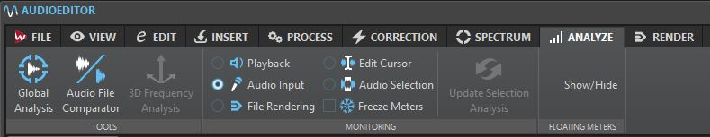
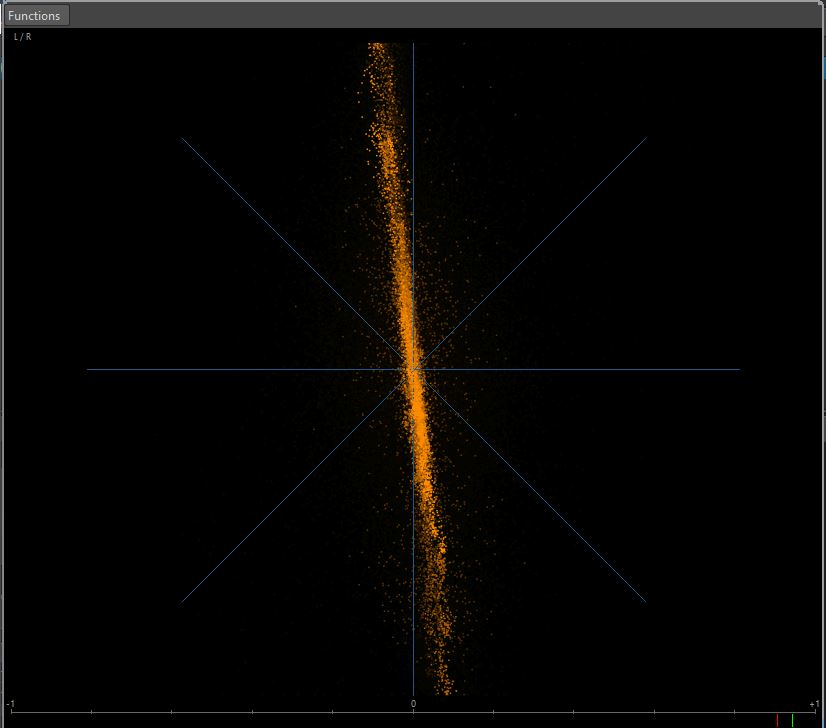

Table of contents
Audio Digitising - Cassette and Reel-to-reel Tapes

Last updated: 03 October 2022
This page outlines the technical workflow for digitising cassette and reel-to-reel tapes for the PARADISEC. This workflow can be modified to accommodate other organisations in their specific digitising goals.
Current configuration for PARADISEC’s ANU studios
Computer workstation
The ANU PARADISEC studio utilises a high-performance DELL OptiPlex 7080 Tower PC workstation with the following specifications:
| SPECIFICATION | DETAILS |
|---|---|
| Memory | 32GB (4x8GB) |
| Processor | Intel Core i7-10700 (8-core, 16MB cache, 2.9GHz to 4.8GHz, 65W) |
| Drive | M.2 512GB Class 35 Solid State Drive |
| Drive | 2.5in 1TB 7200 Hard Disk Drive |
| Drive | 8xDVD +/-RW 9.5mm Optical Disk Drive |
| Full-size Tower | SSF (Small Form Factor) will not accomodate necessary soundcard |
Soundcard: RME HDSPe AIO Pro

A soundcard needed to be added to the DELL tower to provide us with the necessary input and output connections and meet the high-level specifications set by our industry’s peak-body: IASA (the International Association of Sound and Audiovisual Archives).
- D-sub 9-pin socket (for the Digital Breakout Cable: AES/EBU & SPDIF)
- up to 192kHz/24-bit, balanced stereo in/output
- a high quality digital audio stream synchronisation mechanism
- allow the transfer of a digital audio data stream having undergone no change or alteration
AD/DA Converter: RME ADI-2 PRO FS R Black Edition

Having an external, stand-alone analogue/digital converter is critical so that the following archival specifications can be met (see IASA link below for the precise parameters for each):
- Total Harmonic Distortion + Noise
- Dynamic Range (Signal to Noise)
- Frequency Response
- Intermodulation Distortion
- Amplitude Linearaity
- Spurious Aharmonic Signals
- International Clock Accuracy
- Jitter
- External Synchronisation
READ MORE ABOUT analogue to digital converters and sound cards in sections 2.4 and 2.5 of IASA’s TC04: Guidelines on the Production and Preservation of Digital Audio Objects.
Audio cassette player: Tascam 122 mk III

READ MORE ABOUT the use of cassette tape machines in section 5.4.5 of IASA’s TC04: Guidelines on the Production and Preservation of Digital Audio Objects.
Reel-to-reel tape player: Revox C270

Reel-to-reel tape player: Studer A807

READ MORE ABOUT the use of reel-to-reel machines in section 5.4.4 of IASA’s TC04: Guidelines on the Production and Preservation of Digital Audio Objects.
Software
The software we use to digitise audio is Steinberg’s Wavelab 10 Pro
Digitising Cassette Tapes
Note: Avoid internet browsing and any activity over the network during digitisation (these activities can cause interference, which may result in digital clips and unwanted errors in the signal). Avoid using mobile phones or other mobile devices (better yet, turn them off or leave them outside of the studio), including close wi-fi transmitters, and as a precaution, close any programs other than WaveLab during the digitising process.
-
Turn on computer and login with your ANU UDS credentials
Resources you should find on the desktop:
- Wavelab Pro 10.0 shortcut
- Wavelab Pro 10.0 operations manual
- Turn on the RME ADI-2 PRO FS R
- Turn on and load a tape into the Tascam 122 mk III
-
Open the Wavelab program.
You may need to select New Project if presented with a start-up window.

Otherwise, the main Wavelab window will open up

Make sure the Workspace layout is the PARADISEC layout. Go to the banner menu at the top and select Workspace > Layout > PARADISEC

-
Once main window opens, go up to the banner menu again and select File > New.

-
Another window pops up asking you to select the template. Select PARADISEC.

-
A new timeline will appear in the AUDIOEDITOR window located in the lower half of the main window. In this window, select the ANALYZE tab along the top. Make sure to tick the radio button next to Audio Input

From the meter tabs in the upper right quadrant of the main window, grab the PHASESCOPE and drag it out to create a popped-out, larger window.
-
Look to the buttons on the bottom of the window

Press the button with the dot on it, far right. This will open the following recording window and activate the PHASESCOPE:

-
In Method tab under File to Create, select Named file from the drop down menu, then type in the file name you want to assign this file. Select the target location, E:\DigitisedFiles for the output files.
-
Play the tape as a means to test the levels audio levels to recording. These can be seen in the Recording window. Play for a minute or so, making sure the signal stays below -12.00 dB.

-
If the signal on the tape is too loud, you should adjust this on the TASCAM using the OUTPUT dial on the far right of the tape machine. The dial should be on 8 to begin with. Make adjustments from there.
-
Once you adjust the volume, press the Reset button underneath the audio levels back in Wavelab so that you can confirm you have adjusted the audio adequately.

-
As you are previewing the tape, you can see that the PHASESCOPE is also actively monitoring the audio. We will use this scope to help guide us in our Azimuth adjustment.
-
You can find the Azimuth screw on the TASCAM machine in the gap right above the STOP button. It is the screw to the left of the heads. Use the supplied tiny screwdriver.

READ MORE ABOUT Azimuth adjustments in section 5.4.12 of IASA’s TC04: Guidelines on the Production and Preservation of Digital Audio Objects.
-
Confirm the PHASESCOPE is active. There will be a gently moving cluster of random noise (see image below).

Play the tape. Once the signal is clearly coming through, turn the screw to the left and to the right, using your ears and the phasescope to help you determine the clearest signal. If the tape is a cassette tape the same signal will be on both channels. Aim to get the line as vertically straight as possible (see image below).

- Once you get the cleanest, most vertical line you can, rewind the tape, press Record in Wavelab, then press play on the TASCAM and begin digitising the tape. Remain nearby to monitor the progress of this task; keep in mind that something could go wrong as the tape is being played. If you remain nearby you can stop the machine if the tape breaks, preventing further damage to the tape.
Digitising Reel-to-reel Tapes
-
Put the tape reel onto the left spindle, the right is reserved for the take-up empty reel. Make sure tape is spooling off to the left of the reel. Once on the spindle, lift top of the spindle and turn it so that the tabs can lock down the reel.

-
Bring down the tape leader (the extra bit of non-magnetic tape at the beginning of the reel, usually green) and thread it through the various rollers as below.
-
Once threaded through, if digitising on the Studer, flip up the head shield. The shield flips up automatically when play is engaged on the the ReVox.
-
Move the reels manually along until the point where the tape leader ends and the magnetic tape begins almost reach the tape heads.
-
Reset the counter so that it reads 00.00.00.
-
Follow the same WaveLab instructions as above for testing the volumes of the output. To adjust the output volume, make sure the UNCAL light is on. This means the audio volume is uncalibrated and you can adjust volume as needed using the CH1 and CH2 REP/SYNC LEVEL
-
Check the speed of the playback. If it sounds too slow or too fast, cycle through the choices of 3.75, 7.5 or 15. If these do not appear to create the right speed, make note and we may need to adjust once audio is digitised.
-
Adjust the azimuth for open reel tapes. The hex nut is located directly above the tape head as seen in image below:

If the tape you are digitising is recorded as mono, and there is signal only in one channel, you will see the line is at a 45° angle, leaning toward the left or the right, depending upon which track the mono signal was recorded on (see image below).
Many tapes we receive were recorded as mono, with a different mono track on each side of the tape. We digitise these two tracks simultaneously. As a result, there will be an X shape for representing both mono tracks. As the audio for both tracks is playing simultaneously (one track will play normally, the other will be reversed), you will rely more on the phasescope to adjust the azimuth (see image below).

-
Once everything has been checked and adjusted, stop the reel from playing.
-
Get WaveLab set up to record the track, following the instructions as outlined above (specifically: step 16).
NOTE: As previously mentioned, it may be that the tape has been recorded as mono tracks on both sides. Our system will digitise both mono tracks simultaneously. If you are using headphones, you will hear one track in one ear, playing correctly, and the second track in the other ear, playing backwards.
-
When the tape is coming to the end, watch closely and stop playback when the magnetic tape finishes passing along the heads and the trailer tape appears (usually red). Then stop the recording in WaveLab.
-
Press z-loc to rewind the tape back onto original reel.
NOTE: DO NOT HIT REWIND. Use the Z-Loc button. This will rewind the tape, slowing down as it approaches the 00.00.00 point in the counter. This will ensure we do not need to rethread the tape, and it is a more cautious way to treat the tape
Low-cost Options
The equipment and software mentioned above have been selected to adhere to best practice in digital preservation and archiving as set out by IASA. However, it is very a costly set-up. Below are some options for audio cassette digitising that recognise the need for standards, but also recognise that preservation (and access to the tape content) is paramount.
Software
Steinberg WaveLab is a very powerful studio software for audio capture and editing. However there are a couple of free options that are available for both audio recording and editing that are also easy to use:


Both of these options allow you to capture a stereo audio file at 96kHz/24bit and do post-production on the files you have created, cutting off long silences at the beginning or end of the files, boosting the audio gain if volume is too low, etc.
Equipment
Alternative to the AD/DA Converter
As a stand-in for the digital converter mentioned above, you can use an audio recorder. The Zoom H4N Pro recording devices are great and rugged tools to use for digitising as well as field recorders. The Zoom offers an audio interface (Audio I/F) which connects to a computer via USB.
| Audio recorder | Features |
|---|---|
| Zoom H4N Pro Link | 44.1/48/96kHz, 16/24bit WAV; internal X/Y stereo mic, 2 XLR external mic inputs (with phantom power), 3.5mm mic input, powered by 2 AA batteries or USB, records to SD/SDHC cards |
Portable cassette players
To be able to digitise a tape, you need to find a playback device. These are increasingly becoming harder to source. If you are not able to purchase a professional tape machine, some smaller, less-expensive portable models may be used. Be aware, you may not get the same quality, especialy as you will not be able to adjust the azimuth on these smaller units.
Pictured below ia a Panasonic RQ-2102 Slim Line shoe-box style tape player connected to a Zoom H4N Pro (cable configueation: 3.5mm headphone jack output from the Panasonic to an input mic of the Zoom H4N Pro using a 6.35mm phone adapter). The Zoom is then attached to a laptop via the Audio I/F USB option. Recording was done using Wavepad software. This configuration with the Zoom only allows a 44.1kHz or 48kHz sampling rate.

Below is a Marantz CP-230 portable stereo cassette deck. This player has two output options, a 6.35mm phone jack and RCA output.
The RCA oputput (using an RCA to 3.5mm) and the same Zoom USB-to-laptop-and-Wavepad configuration as above also yielded a mono recording.
Connecting the Marantz to the Zoom H4N Pro to record directly to the SD card, rather than using Wavepad yielded a stereo recording. For this, the output 6.35mm phone jack for the Marantz is configured for stereo. This was then connected to the 3.5mm mic input on the back of the Zoom H4N Pro. This mic input is also stereo. The audio was recorded as a stereo 96Khz, 24bit .wav file.

Remember, if you are using a tape player that has a mono headphone jack, you will not capture the stereo content of the cassette. You may try a Walkman-style tape player as this will have a stereo headphone output.
Always clean and test your equipment before playing the tape you are intending to digitise. It is best to get the device serviced prior to use. Try out your entire workflow on stereo practice tapes to determine the best configuration for your project.
Additional Resources
Blewer, A. (2020). Pragmatic Audiovisual Preservation, DPC Technology Watch Report, p. 45. Digital Preservation Coalition. https://doi.org/10.7207/twr20-10.
Bradley, K. (ed.). (2009). IASA-TC04: Guidelines on the production and preservation on digital audio objects: Standards, recommended practices and strategies, 2nd edition (IASA Technical Publications IASA-TC04; Technical Committee Standards, Recommended Practices, and Strategies, p. 156). International Association of Sound and Audiovisual. https://www.iasa-web.org/tc04/audio-preservation
Casey, M., & Gordon, B. (2007). Sound Directions: Best Practices for Audio Preservation. Sound Directions. http://www.dlib.indiana.edu/projects/sounddirections/papersPresent/index.shtml.
⬆️ Back to top

This work is licensed under a Creative Commons Attribution-NonCommercial-ShareAlike 4.0 International License.